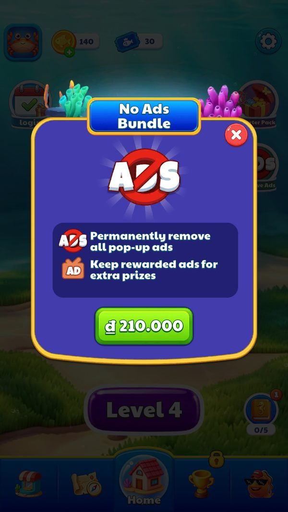
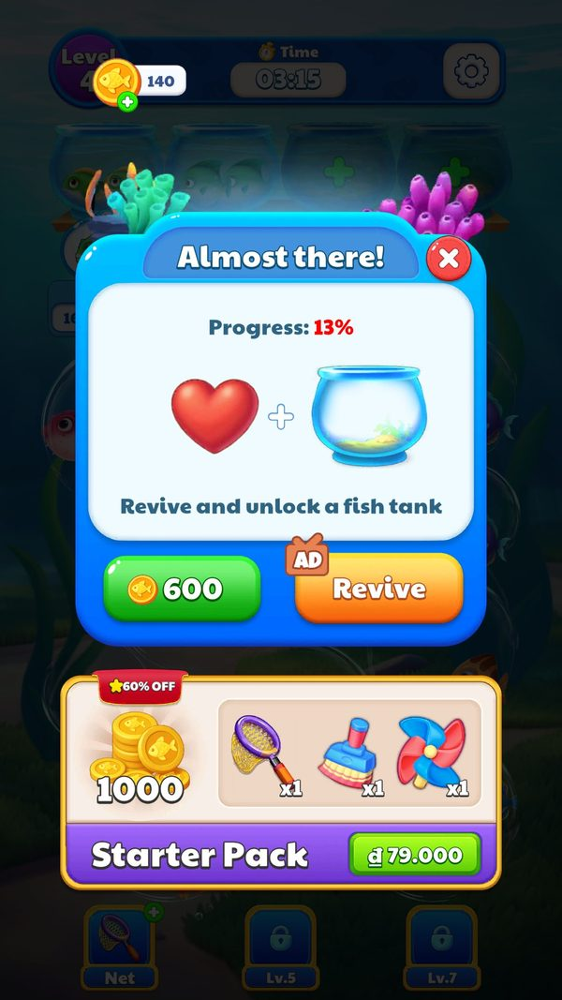

Quảng cáo
Quảng cáo là nguồn doanh thu chính và được thiết kế ở mức từng màn chứ không phải một quy tắc chung.
Mô tả
- Quảng cáo là nguồn doanh thu chính và được thiết kế ở mức từng màn chứ không phải một quy tắc chung.
- Mỗi màn trong LevelConfig mang bốn trọng số quyết định xác suất chiếu 0, 1, 2 hay 3 quảng cáo xen kẽ khi kết thúc màn.
- Đường cong rất rõ: level 1 đến 10 nhẹ tay với kỳ vọng 0,84 quảng cáo mỗi màn, tăng nhanh lên 1,52 ở level 11 đến 50, rồi chốt ở 1,71 từ level 51 và giữ nguyên suốt 1.250 màn còn lại.
- Ngoài quảng cáo xen kẽ còn có banner và quảng cáo thưởng gắn với hồi sinh.
- Chiếu quảng cáo xen kẽ sau khi kết thúc màn: Người chơi xem từ 0 đến 3 quảng cáo liên tiếp
- Xem quảng cáo để hồi sinh: Người chơi chơi tiếp mà không tốn tiền
- Mua gỡ quảng cáo: Không còn quảng cáo xen kẽ
- Hiện hộp thoại đồng ý GDPR: Lưu lựa chọn vào IABTCF và UMP_consentModeValues
Lưu ý
Ảnh chụp màn hình (3)
Chụp trực tiếp từ game đang chạy: 2026-10-06 · LDPlayer 9 · Android 9 · 1080×1920 · máy ảo PHM110 · v1.4111 (cài từ Google Play ngày 12/09/2026) · tài khoản test JadeGill, đang ở level 4. Bấm ảnh để phóng to, dùng phím ← → để chuyển ảnh.





Mở khóa & điểm vào
Trọng số quảng cáo khác 0 xuất hiện lần đầu ở level 3; khả năng chiếu 3 quảng cáo liên tiếp có từ level 7.
Điểm vào:
- Kết thúc màn, thắng hoặc thua
- UIPanelRevive mời xem quảng cáo để hồi sinh
- Banner ở một số màn hình
- UIPanelNoAdv bán gói gỡ quảng cáo
Cách hoạt động
- SDKManager bọc toàn bộ mạng quảng cáo qua ZMYSDK với ba lệnh chính là ShowInterAd, ShowBannerAd và HideBannerAd.
- Khi kết thúc màn, game bốc số lần chiếu theo bốn trọng số NoAdWeight, OneAdWeight, TwoAdWeight và ThreeAdWeight của màn đó, tổng luôn bằng 1.0.
- Kết quả được đếm vào LEVEL_ADV_DATA_KEY theo bốn bộ đếm riêng cộng tổng AdCount, nên nhà phát hành đo được phân phối thực tế.
- Chuỗi log trong UIPanelFail cho thấy còn một bộ đếm riêng SHOW_INTERAD_COUNT_KEY với hai thông điệp 尝试显示插屏广告 (thử hiện quảng cáo xen kẽ) và 成功显示插屏广告 (hiện thành công), kèm level và tên vị trí quảng cáo.
- Tham số server insert_test đang là 1_2_8_1_1 trong khi mặc định client là 0_2_5_1_0, nghĩa là nhà phát hành đang chạy một nhánh thử nghiệm khác với bản đóng gói.
Luồng chi tiết theo code
SDKManager bọc toàn bộ mạng quảng cáo qua ZMYSDK với ba lệnh chính là ShowInterAd, ShowBannerAd và HideBannerAd. Khi kết thúc màn, game bốc số lần chiếu theo bốn trọng số NoAdWeight, OneAdWeight, TwoAdWeight và ThreeAdWeight của màn đó, tổng luôn bằng 1.0. Kết quả được đếm vào LEVEL_ADV_DATA_KEY theo bốn bộ đếm riêng cộng tổng AdCount, nên nhà phát hành đo được phân phối thực tế. Chuỗi log trong UIPanelFail cho thấy còn một bộ đếm riêng SHOW_INTERAD_COUNT_KEY với hai thông điệp 尝试显示插屏广告 (thử hiện quảng cáo xen kẽ) và 成功显示插屏广告 (hiện thành công), kèm level và tên vị trí quảng cáo. Tham số server insert_test đang là 1_2_8_1_1 trong khi mặc định client là 0_2_5_1_0, nghĩa là nhà phát hành đang chạy một nhánh thử nghiệm khác với bản đóng gói.
Phần thưởng
PHẦN THƯỞNG
| Bối cảnh | Phần thưởng | Bằng chứng |
|---|---|---|
| Quảng cáo thưởng khi hồi sinh | Tiếp tục màn đang chơi | UIPanelRevive |
Phần thưởng theo code
| Ngữ cảnh | Phần thưởng | Evidence |
|---|---|---|
| Quảng cáo thưởng khi hồi sinh | Tiếp tục màn đang chơi | UIPanelRevive |
Số liệu chính
| Chỉ số | Giá trị | Nguồn |
|---|---|---|
| Bốn trọng số quảng cáo theo màn | level 1 đến 10 NoAd trung bình 0,495; level 11 đến 50 NoAd 0,233; từ level 51 NoAd 0,163 OneAd 0,250 TwoAd 0,300 ThreeAd 0,287 | AssetRes/Configs/Custom/LevelConfig.json |
| LEVEL_ADV_DATA_KEY | NoAdCount, OneAdCount, TwoAdCount, ThreeAdCount, AdCount | PlayerPrefs |
| SHOW_INTERAD_COUNT_KEY | bộ đếm riêng cho quảng cáo xen kẽ | chuỗi trong UIPanelFail |
| insert_test | 1_2_8_1_1, mặc định client là 0_2_5_1_0 | SDKManager.getOnlineConfigParams |
| AdzConfig.json | 176 KB mã hoá base64, có bản dự phòng AdzConfigbk.json 45 KB | /data/data/<pkg>/files/AdzConfig.json |
| ia-global.config / ia-remote.config | JSON thuần, các thử nghiệm kiểu close_button_video_endcard | /data/data/<pkg>/files/ |
Use case (4)
Bấm vào từng use case để mở. Mở/đóng tất cả
UC-01 Chiếu quảng cáo xen kẽ sau khi kết thúc màn
Các bước- Đọc bốn trọng số của màn
- Bốc ngẫu nhiên ra số lần chiếu từ 0 đến 3
- Ghi log 尝试显示插屏广告 kèm level và tên vị trí
- Gọi SDKManager.ShowInterAd
- Ghi log 成功显示插屏广告 nếu hiện được
- Tăng bộ đếm trong LEVEL_ADV_DATA_KEY
| Actor | System |
|---|---|
| Trigger | Thắng hoặc thua một màn |
| Điều kiện | Chưa mua gỡ quảng cáo |
| Kết quả | Người chơi xem từ 0 đến 3 quảng cáo liên tiếp |
| Quy tắc / số liệu | Kỳ vọng 0,84 quảng cáo mỗi màn ở level 1 đến 10; 1,52 ở level 11 đến 50; 1,71 từ level 51 tới 1300 |
| Evidence | LevelConfig.NoAdWeight..ThreeAdWeight; SDKManager.ShowInterAd; chuỗi SHOW_INTERAD_COUNT_KEY trong UIPanelFail |
UC-02 Xem quảng cáo để hồi sinh
Các bước- UIPanelRevive mở
- Người chơi chọn xem quảng cáo
- SDK chiếu quảng cáo thưởng
- Màn tiếp tục và ReviveNumber tăng
| Actor | Player |
|---|---|
| Trigger | Thua màn và chọn hồi sinh |
| Điều kiện | Có quảng cáo thưởng sẵn sàng |
| Kết quả | Người chơi chơi tiếp mà không tốn tiền |
| Evidence | UIPanelRevive; LevelData.ReviveNumber |
UC-03 Mua gỡ quảng cáo
Các bước- Hiển thị gói removeads
- Thanh toán qua DobestPay
- Đặt ShopData.IsBuyNoAdv thành true
| Actor | Player |
|---|---|
| Trigger | Mở UIPanelNoAdv |
| Điều kiện | Chưa mua |
| Kết quả | Không còn quảng cáo xen kẽ |
| Evidence | ShopData.IsBuyNoAdv; sku triple.sorting.bubble.fish.match.removeads |
UC-04 Hiện hộp thoại đồng ý GDPR
Các bước- Gọi ShowGDPRDialogStatic
- Google User Messaging Platform hiện form
| Actor | System |
|---|---|
| Trigger | Khởi động ở khu vực áp dụng GDPR |
| Điều kiện | IsRequestLocationInEeaOrUnknownStatic trả về true |
| Kết quả | Lưu lựa chọn vào IABTCF và UMP_consentModeValues |
| Evidence | SDKManager.ShowGDPRDialogStatic; SDKManager.IsRequestLocationInEeaOrUnknownStatic; shared_prefs triple.sorting.bubble.fish.match_preferences.xml |
Cấu hình (9)
Gộp mọi nguồn: const trong code, JSON mặc định trong Resources, bảng static, storage key, AB test, cờ server.
| Nguồn | Key | Kiểu | Giá trị | Ý nghĩa | Nơi định nghĩa |
|---|---|---|---|---|---|
| config class | Bốn trọng số quảng cáo theo màn | float | level 1 đến 10 NoAd trung bình 0,495; level 11 đến 50 NoAd 0,233; từ level 51 NoAd 0,163 OneAd 0,250 TwoAd 0,300 ThreeAd 0,287 | Xác suất số quảng cáo chiếu khi kết thúc màn | AssetRes/Configs/Custom/LevelConfig.json |
| storage key | LEVEL_ADV_DATA_KEY | json | NoAdCount, OneAdCount, TwoAdCount, ThreeAdCount, AdCount | Thống kê thực tế đã chiếu | PlayerPrefs |
| storage key | SHOW_INTERAD_COUNT_KEY | int | bộ đếm riêng cho quảng cáo xen kẽ | Dùng trong điều kiện chặn tần suất | chuỗi trong UIPanelFail |
| server info | insert_test | string | 1_2_8_1_1, mặc định client là 0_2_5_1_0 | Nhánh thử nghiệm quảng cáo xen kẽ đang chạy | SDKManager.getOnlineConfigParams |
| asset | AdzConfig.json | blob | 176 KB mã hoá base64, có bản dự phòng AdzConfigbk.json 45 KB | Cấu hình mạng quảng cáo của nhà phát hành | /data/data/<pkg>/files/AdzConfig.json |
| asset | ia-global.config / ia-remote.config | json | JSON thuần, các thử nghiệm kiểu close_button_video_endcard | Cấu hình thử nghiệm của mạng quảng cáo | /data/data/<pkg>/files/ |
| runtime LDPlayer 06/10/2026 | Điểm đặt quảng cáo thưởng | rule | Nút Claim (AD) ở popup booster; nút AD Revive ở panel hồi sinh | Quảng cáo thưởng thay cho vàng | ảnh chụp screenshots/booster_net_buy.jpg |
| runtime LDPlayer 06/10/2026 | Phạm vi No Ads | rule | "Permanently remove all pop-up ads" + "Keep rewarded ads for extra prizes" | No Ads chỉ gỡ quảng cáo xen kẽ | ảnh chụp screenshots/shop_no_ads_bundle.jpg |
| runtime LDPlayer 06/10/2026 | Quảng cáo xen kẽ ở level 4 | observed | Không xuất hiện trong 3 lượt chơi | Do insert_test đặt level tối thiểu 8 (theo analysis/sale-ads-model); LevelConfig2 level 4 có NoAdWeight 0,4 | facts/runtime/decoded/playerprefs_2026-10-06.json |
Bảng config gốc trong APK
Trọng số quảng cáo 30 màn đầu (LevelConfig2, nhánh đang chạy)
Bốn trọng số cho khả năng màn có 0/1/2/3 quảng cáo. AssetRes/Configs/Custom/LevelConfig2.json · 30/208 dòng.
| LevelID | NoAdWeight | OneAdWeight | TwoAdWeight | ThreeAdWeight | LevelDifficulty |
|---|---|---|---|---|---|
| 3 | 0.5 | 0.35 | 0.15 | 0 | 1 |
| 4 | 0.4 | 0.35 | 0.25 | 0 | 2 |
| 5 | 0.35 | 0.3 | 0.35 | 0 | 2 |
| 6 | 0.35 | 0.25 | 0.4 | 0 | 2 |
| 7 | 0.3 | 0.15 | 0.3 | 0.25 | 3 |
| 8 | 0.45 | 0.35 | 0.2 | 0 | 1 |
| 9 | 0.35 | 0.25 | 0.25 | 0.15 | 2 |
| 10 | 0.35 | 0.25 | 0.25 | 0.15 | 2 |
| 11 | 0.45 | 0.35 | 0.2 | 0 | 1 |
| 12 | 0.3 | 0.15 | 0.2 | 0.25 | 3 |
| 13 | 0.45 | 0.35 | 0.2 | 0 | 1 |
| 14 | 0.35 | 0.25 | 0.25 | 0.15 | 2 |
| 15 | 0.35 | 0.25 | 0.25 | 0.15 | 2 |
| 16 | 0.3 | 0.15 | 0.3 | 0.25 | 3 |
| 17 | 0.45 | 0.35 | 0.2 | 0 | 1 |
| 18 | 0.25 | 0.25 | 0.25 | 0.25 | 2 |
| 19 | 0.25 | 0.25 | 0.25 | 0.25 | 2 |
| 20 | 0.2 | 0.15 | 0.3 | 0.35 | 3 |
| 21 | 0.25 | 0.25 | 0.25 | 0.25 | 2 |
| 22 | 0.35 | 0.35 | 0.3 | 0 | 1 |
| 23 | 0.25 | 0.25 | 0.25 | 0.25 | 2 |
| 24 | 0.25 | 0.25 | 0.25 | 0.25 | 2 |
| 25 | 0.2 | 0.15 | 0.3 | 0.35 | 3 |
| 26 | 0.35 | 0.35 | 0.3 | 0 | 1 |
| 27 | 0.25 | 0.25 | 0.25 | 0.25 | 2 |
| 28 | 0.25 | 0.25 | 0.25 | 0.25 | 2 |
| 29 | 0.2 | 0.15 | 0.3 | 0.35 | 3 |
| 30 | 0.25 | 0.25 | 0.25 | 0.25 | 2 |
| 31 | 0.35 | 0.35 | 0.3 | 0 | 1 |
| 32 | 0.15 | 0.25 | 0.25 | 0.35 | 2 |
Tham số server (live)
Tham số online của SDK ZMYSDK (SDKManager.getOnlineConfigParams). Giá trị live đọc từ logcat ngày 12/09/2026; ô tô vàng là chỗ server ghi đè mặc định của client. Bảng đủ 17 khoá ở phụ lục sự kiện và facts/runtime/server-config.md.
| Khoá | Mặc định client | Live (server) | Property C# | Ý nghĩa |
|---|---|---|---|---|
insert_test | 0_2_5_1_0 | 1_2_8_1_1 | (không ánh xạ trực tiếp) | Nhánh thử nghiệm quảng cáo xen kẽ |
Số liệu đo trên máy
Đo trên máy
| Hạng mục | Giá trị đo | Ghi chú |
|---|---|---|
| Quảng cáo xen kẽ trong 3 lượt level 4 | không thấy | insert_test live 1_2_8_1_1 đặt level tối thiểu 8 cho quảng cáo xen kẽ (theo bài phân tích sale-ads-model); LevelConfig2 level 4 có NoAdWeight 0,4 nên trọng số không phải lý do |
| LEVEL_ADV_DATA_KEY | NoAdCount 2, các bộ đếm khác 0 | save thật sau phiên khảo sát |
| Giá No Ads | 210.000 ₫ | Google Play VN |
Backend / server
| Command | Chiều | Mục đích |
|---|---|---|
ShowInterAd / ShowBannerAd / HideBannerAd | client sang SDK | Điều khiển hiển thị quảng cáo |
Giao diện (UI)
| Element | Class | Mục đích |
|---|---|---|
| Bán gói gỡ quảng cáo | UIPanelNoAdv | Chuyển đổi người xem quảng cáo thành người trả tiền |
Storage keys
LEVEL_ADV_DATA_KEY SHOW_INTERAD_COUNT_KEY SHOP_DATA_KEY
Chưa đọc được / ghi chú
- AdzConfig.json mã hoá nên chưa đọc được danh sách mạng quảng cáo, sàn giá và tần suất trần
- Ý nghĩa từng trường trong insert_test 1_2_8_1_1 chưa giải mã được
- Mạng quảng cáo tích hợp gồm AppLovin, Pangle, BigoAds, InMobi, Vungle, Fyber, Moloco, BidMachine, Facebook Audience Network và Unity Ads, nhận diện qua shared_prefs và databases chứ không phải từ code game
- Bài phân tích sale-ads-model đọc lại code: bốn trọng số NoAd/OneAd/TwoAd/ThreeAd chọn LevelAdWeightType → 0–3 cửa sổ tiến độ PointRangeStr đưa vào hàm chọn mục tiêu cá, không phải số quảng cáo xen kẽ chiếu cuối màn; ShowInterAd chiếu tối đa 1 quảng cáo mỗi lần gọi và do insert_test gác. Cách hiểu cũ ở các dòng config trên cần đối chiếu lại (suy luận từ code bị obfuscate)
Tính năng liên quan
Kết thúc màn và hồi sinh Cửa hàng và mua trong ứng dụng Tích hợp SDK nhà phát hành
Nguồn đã đọc
- AssetRes/Configs/Custom/LevelConfig.json
- features/SDKManager.md
- features/UIPanelFail.md
- facts/runtime/raw/AdzConfig.json
- facts/runtime/server-config.md
- feature_extras.json
- screenshots/
- facts/runtime/decoded/playerprefs_2026-10-06.json